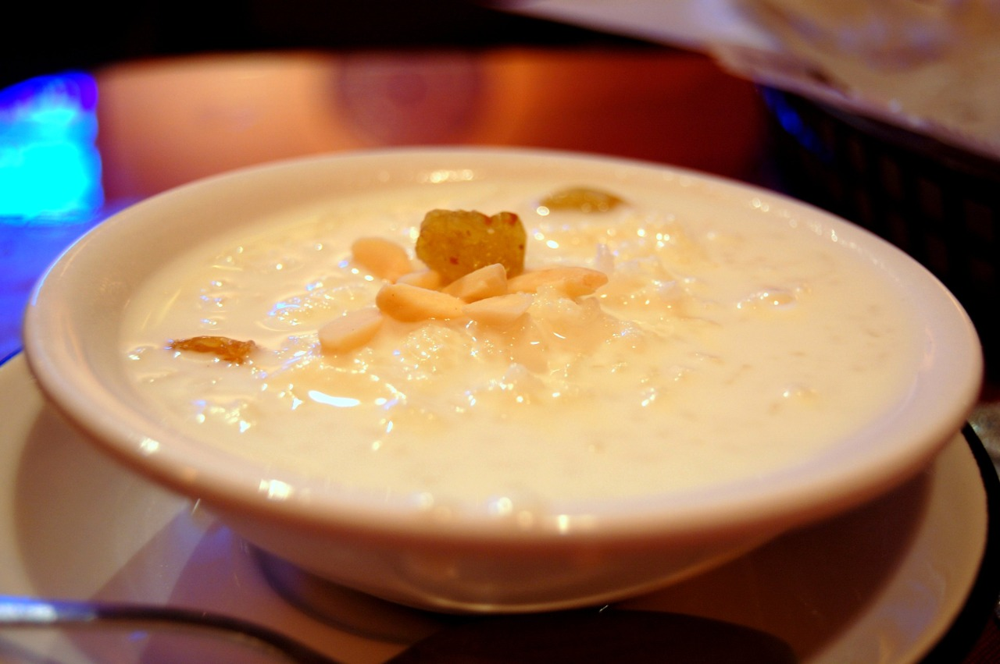
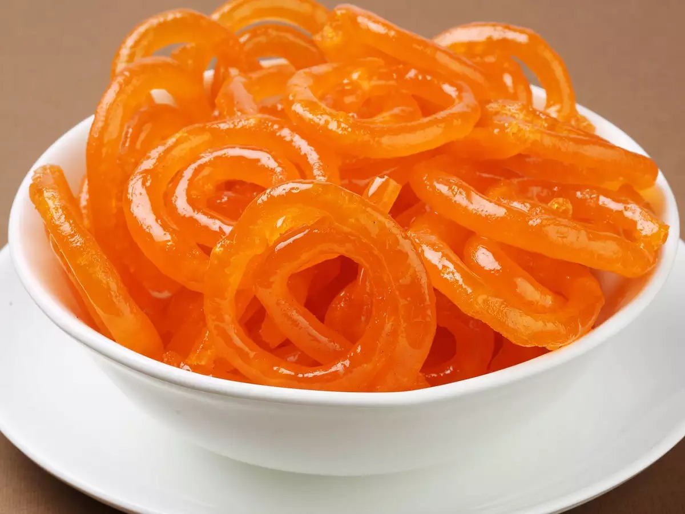
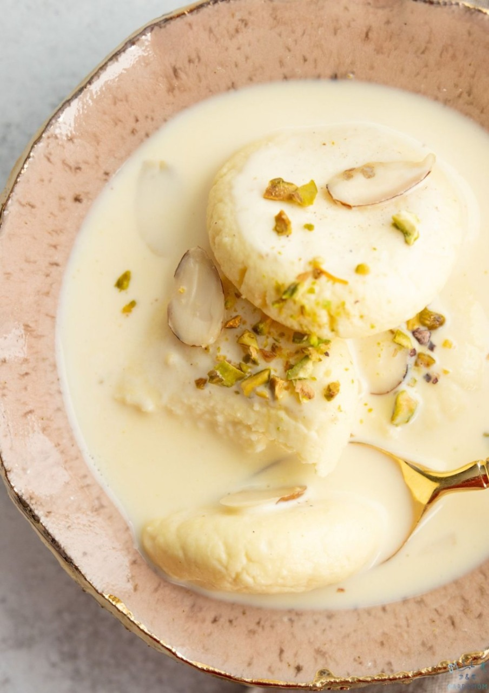
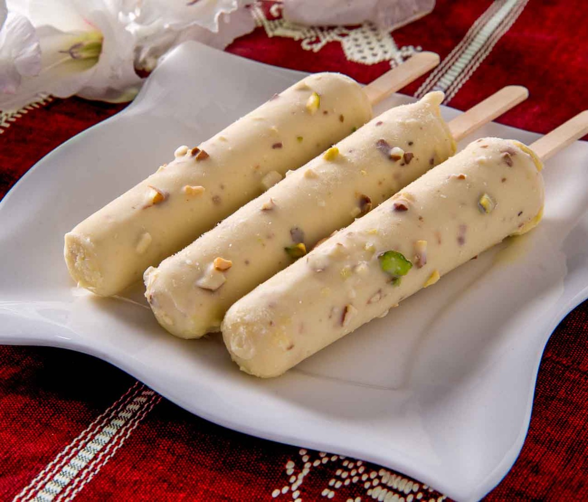

Kheer
Kheer is a rice pudding made with rice, milk, sugar, and spices. It is a popular dessert in South Asia, Southeast Asia, and the Middle East. It is also popular in the Indian subcontinent, the Middle East, and the Balkans.
Gulab Jamun

Gulab jamun is a milk-solid-based sweet from the Indian subcontinent, popular in India, Nepal, Pakistan, Bangladesh, and Sri Lanka. It is made from ball-shaped dumplings of milk solids (khoya or mawa) and flour, soaked in a sugar syrup. It is often garnished with nuts and served during special occasions.
Jalebi
Jalebi is a sweet popular in South Asia, Southeast Asia, and the Middle East. It is made from a batter of flour, sugar, and water, which is deep-fried in oil. It is often garnished with nuts and served during special occasions.
Rasmalai
Rasmalai is a popular Indian dessert made from chhena, a type of cottage cheese. It is a popular dessert in the Indian subcontinent and the Middle East.
Kulfi
Kulfi is a frozen dairy dessert that originated in the Indian subcontinent. It is made from sweetened condensed milk and flavored with cardamom, saffron, or pistachios. It is often served during the summer months.